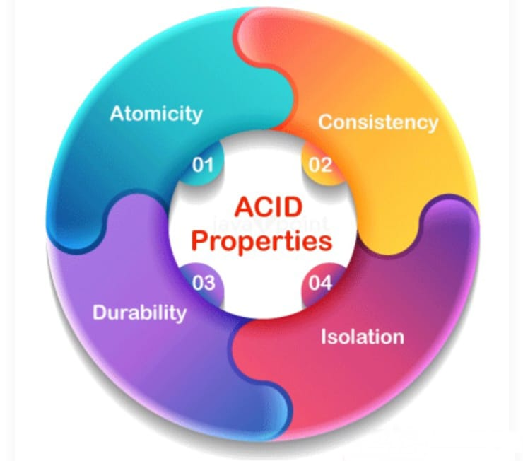
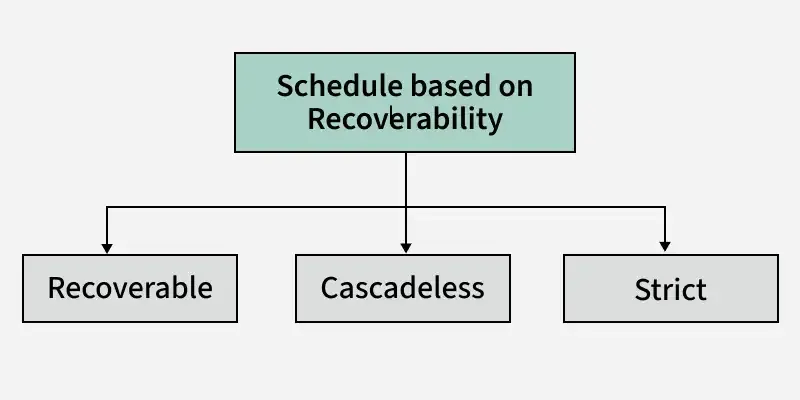
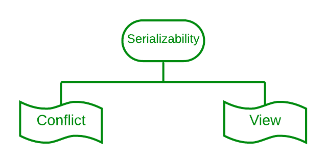

Definition of Transaction
A transaction is a sequence of operations performed as a single logical unit of work in a database. A transaction ensures that the database remains in a consistent state despite system failures, concurrent operations, or errors.
Example: Consider a bank transfer where money is transferred from Account A to Account B:
- Debit $500 from Account A
- Credit $500 to Account B
- If any step fails, the transaction is rolled back to maintain consistency.
Transaction Properties

Transactions in a database system must maintain the ACID properties:
- Atomicity: Ensures that a transaction is either fully completed or fully rolled back.
Example: A shopping cart checkout where payment processing fails; the order should not be placed.
- Consistency: Ensures that a database remains in a consistent state before and after a transaction.
Example: A student enrollment system should not allow enrolling in a course that exceeds seat availability.
- Isolation: Ensures that transactions execute independently without interference.
Example: Two ATMs withdrawing from the same account should not cause incorrect balance updates.
- Durability: Ensures that the effects of a committed transaction are permanently stored.
Example: A flight booking should remain confirmed even after a power outage.
Schedules based on Recoverability

Schedules can be categorized based on whether they allow recovery after failures:
- Recoverable Schedule: A schedule where transactions commit only after ensuring that all dependent transactions commit.
Example: An online order should not be confirmed unless payment is successfully processed.
- Cascadeless Schedule: A recoverable schedule that avoids cascading rollbacks by ensuring transactions read only committed data.
Example: A warehouse inventory system should only process new shipments after confirming the previous stock update.
- Strict Schedule: A cascadeless schedule that ensures that once a transaction writes a data item, no other transaction can access it until the first one is committed or rolled back.
Example: A library management system should not allow borrowing a book that is being returned until the return is fully processed.
Schedules based on Serializability

Schedules are categorized based on their equivalence to serial execution:
- Serializable Schedule: A schedule that results in the same outcome as a serial execution of transactions.
Example: Processing bank deposits and withdrawals in parallel but yielding the same result as executing them one after another.
- Conflict Serializability: A schedule that can be transformed into a serial schedule by swapping non-conflicting operations.
Example: If one transaction updates an email address and another updates a phone number, their order can be swapped without conflicts.
- View Serializability: A schedule that produces the same final result as a serial schedule, even if the order of operations differs.
Example: Two transactions updating different bank accounts may execute in a different order but still lead to the same final balances.
Conclusion
Transaction processing plays a crucial role in maintaining the integrity and consistency of a database system. By following the ACID properties and ensuring proper scheduling, databases can handle concurrent transactions efficiently and reliably. Understanding different types of schedules, such as those based on recoverability and serializability, helps in designing robust database systems that prevent data anomalies and ensure smooth operation.